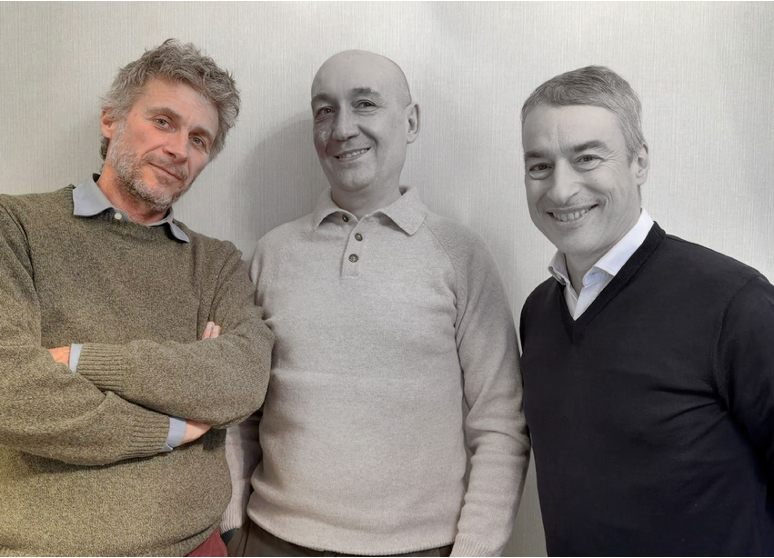
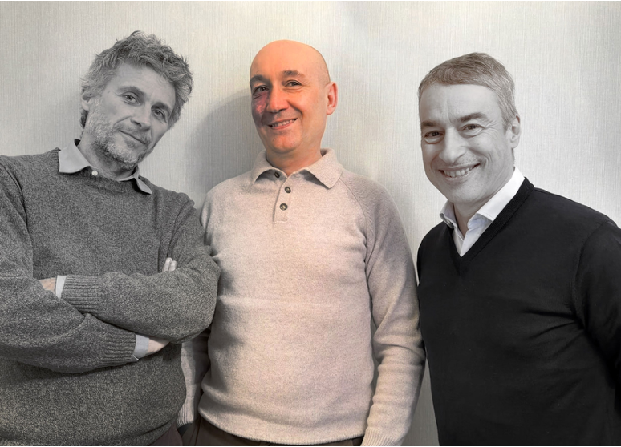
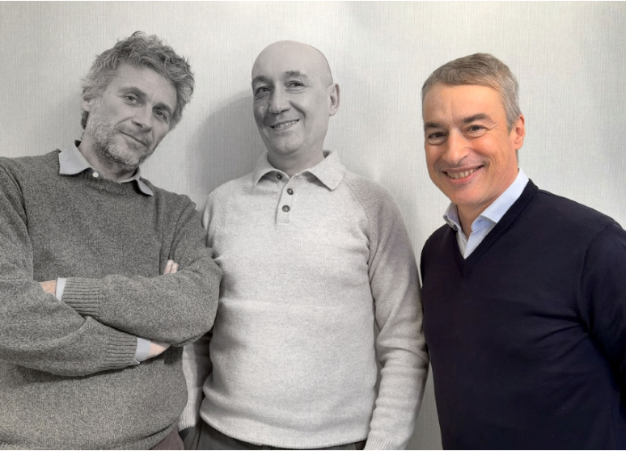

THE TEAM
A balance of multidisciplinary talents.
Zefiro brings together an architect, a naval engineer and a management engineer — three disciplines that converge into a single, coherent vision for the future of water transport.
A balance of multidisciplinary talents.
Zefiro brings together an architect, a naval engineer and a management engineer — three disciplines that converge into a single, coherent vision for the future of water transport.
Zefiro brings together an architect, a naval engineer and a management engineer — three disciplines that converge into a single, coherent vision for the future of water transport.
Architect & Industrial Designer
Novara, 1967. An architect who graduated from the Politecnico di Milano with a thesis project for a public transport vessel designed for lagoon waters. He also trained as an industrial designer at the Scuola Politecnica di Design in Milan, and has worked abroad on major construction projects. He has run his own architecture and design practice in Milan since 1992. A sailor, regatta competitor and navigator — from the Mediterranean to the Atlantic and the Arctic. Since 2005, he has focused primarily on product design in the industrial and nautical sectors, designing both production-run and one-off vessels. Endowed with lateral thinking, he has a knack for bringing original and unconventional ideas down to earth, transforming them with ingenuity, creativity and method into feasible projects.
Naval Engineer
Milan, 1973. Specializing in yacht design, computational fluid dynamics and the engineering of composite products, he has been working for over thirty years in the field of design and the development of complex objects, from initial design through to final production. He has designed and collaborated on the design of numerous sailing and motor boats, winning prestigious awards for design and engineering. He has sailed on sailing yachts of all types and sizes, serving as helmsman, mainsail trimmer, tactician and skipper in coastal and ocean races, from monohulls to large ocean-going multihulls.
Management Engineer
Born in 1964, an engineer from the Politecnico di Milano. Francesco began his career at the CNR when artificial intelligence was still the stuff of science fiction. After gaining experience in Germany and Austria, he joined the Cannon Group in 1995, building — and initially, selling — industrial machinery. Since then, he has held various roles, always working hands-on with technology. Always curious and a bit of a nerd, he sees innovation as a never-ending adventure. Outside of work, he goes trail running, skiing, plays tennis and enjoys time with his family. He loves the sea, although — like a true engineer — he tends to see it more as a place for sailing than for sunbathing.


